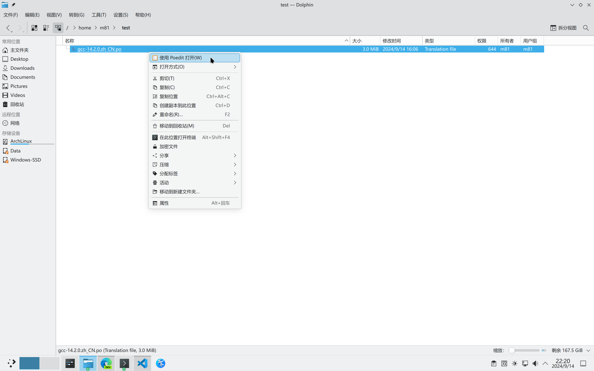
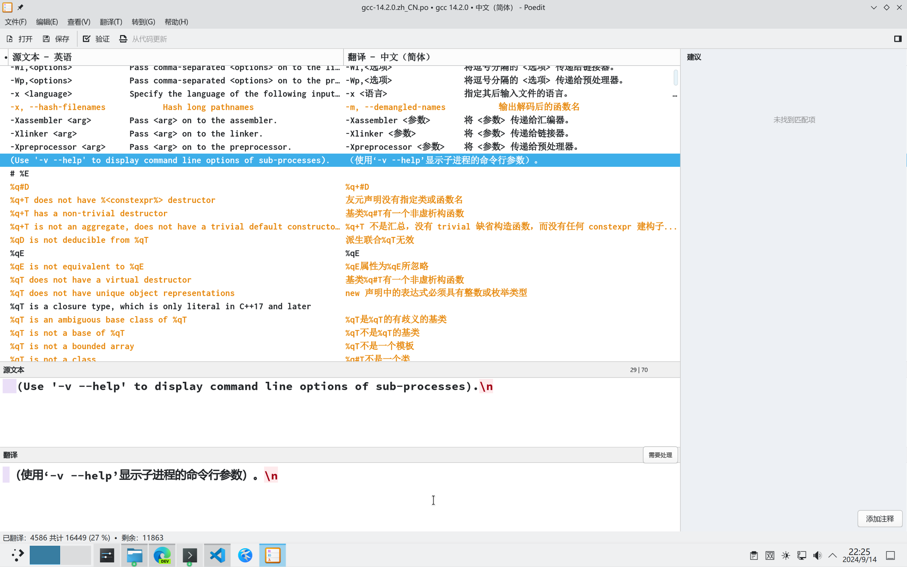
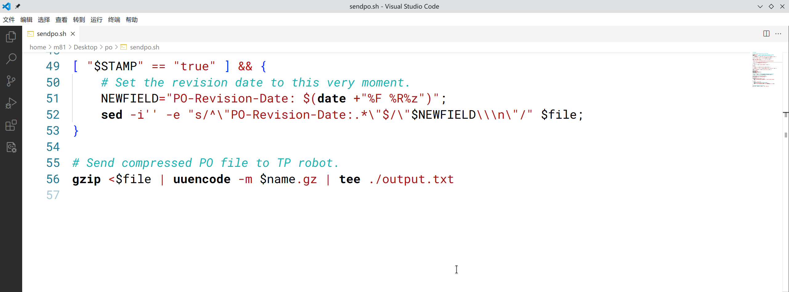

如何为 gcc 贡献中文翻译
在本地试验
先在本地试一试修改 gcc 的翻译吧. 新建一个用来折腾的文件夹 ~/test/.
下载最新翻译
下载 Translation Project 上的最新版 gcc 简体中文翻译文件. 截至发稿时，gcc 最新版本为 14.2.0 版.
下载了一个叫做 gcc-14.2.0.zh_CN.po 的文件.
关于 Translation Project，AI 是这样介绍的：
GNU 翻译项目（GNU Translation Project）是一项由社区推动的倡议，致力于将 GNU 软件的用户界面、文档和手册翻译成多种语言，以实现软件的国际化和本地化. 该项目欢迎志愿者参与，提供翻译工具和资源，旨在确保自由软件能够跨越语言障碍，惠及全球用户，增强其可及性和用户体验.
gcc 的最新版翻译文件和其他语言翻译可以在这里找到；其他软件的翻译项目可以在这里找到. 这些都可以在官网找到，我们先暂时不管它们.
编辑翻译文件
接下来需要编辑这个 .po 文件，选择其中的词条（称为 msgid）翻译成中文（在 msgstr）.
当然可以用文本编辑器直接开干. 更推荐的是用专门的编辑 .po 文件的软件来干活更方便啦.
这里推荐使用 Poedit 软件. 下载安装（比如 Arch Linux；其他各发行版请使用各自的工具安装）：
然后右键点击 gcc-14.2.0.zh_CN.po，选择“使用 Poedit 打开”.

可以看到如下的工作区. 其中没有中文的黑色条目是缺少翻译的；有中文但黄色字体的是“需要处理”的（带“fuzzy”标签），表示中文翻译仍不准确，需要修改.

黄色的条目即使有中文翻译，但是被标记了 fuzzy 标签（Poedit 显示“需要处理”），最终仍不会显示出来.
我们选择有待处理的条目，在下方翻译区输入自己的中文翻译.
翻译完成后，点击保存. Poedit 会先验证文件是否有问题. 若无任何错误提示，说明已经成功保存了修改. 而且可以在 ~/test/ 中看到已经自动编译好了的 .mo 文件.
由于 .po 文件以文本格式存储，计算机查找速度慢，故需先将 .po 文件编译为 .mo 二进制文件，才能正常使用.
也可以手动输入命令来编译：
若提示找不到 msgfmt 命令，需下载安装 gettext 包：
替换系统翻译
接下来，先备份系统中的 gcc.mo，然后用编译好的 .mo 文件替换系统中预设的 gcc.mo：
$ mv /usr/share/locale/zh_CN/LC_MESSAGES/gcc.mo /usr/share/locale/zh_CN/LC_MESSAGES/gcc.mo.old
$ cp ~/test/gcc-14.2.0.zh_CN.mo /usr/share/locale/zh_CN/LC_MESSAGES/gcc.mo
这样，就成功地将 gcc 的英文提示翻译成中文啦！当然，可能大多数词条不那么容易显示出来. 你可以在使用 gcc 的过程中看到英文提示时，复制英文提示，在 Poedit 中查找到这个未翻译的词条，将它翻译成中文. 然后按照上述操作，就可以看到原来的英文提示变成中文啦.
申请加入翻译团队
那么，如何将自己的翻译上传到官方项目中，为翻译工作做贡献呢？
所有信息在官网上都可以查到，这里仅总结一下操作流程.
首先加入简体中文翻译团队的邮件列表来接收成员们发送的邮件. 成员们可能会在邮件列表中讨论翻译项目，协调翻译工作，分享翻译相关的资源，寻求帮助或建议等.
接下来，你需要填写一份免责声明（disclaimer）. 在此处填写你的姓、名、填写日期和电子邮件地址，勾选“Yes”，点击“Save”. 以后使用这个电子邮件来提交自己的翻译.
然后分别向 Translation Project Coordinator 和简体中文团队负责人 Boyuan Yang 发送邮件，请求他们同意你加入简体中文翻译团队. 只有团队成员才有权提交翻译.
大约两三天后，会陆续收到抄送的邮件，是负责人和 Coordinator 沟通同意加入申请.
成功加入后，你就可以在简体中文翻译团队的 Translator 列中找到自己的名字啦.
在这个页面中还可以看到各个软件包的简体中文翻译进度. 有的软件包还被指定了译员（Assigned translator）. 点击包名称即可跳转到它的主页面；点击版本号可以查看和下载最新的 .po 翻译.
提交翻译
现在，你要使用 Translation Project robot (or TP-robot) 来将自己的 .po 文件提交到项目中.
你可以在此处查看关于 TP-robot 的说明. 官网是这么介绍的：
翻译项目机器人（或 TP-robot）是一个处理 PO 文件提交的电子邮件服务. 它检查文件是否可以被接受——也就是说，检查译者是否填写了她的免责声明（在需要的地方）——以及她的团队是否允许她进行这项工作. 它还会调用
msgfmt来查看 PO 文件是否健全，并检查其他各种问题.
下载提交脚本
你需要下载一个 shell 脚本，用来处理你的 .po 文件，并将其发送给 TP-robot：
要想让脚本正确处理 .po 文件，需要让 .po 文件的文件名符合 <软件包名称>-<版本号>.<语言代码>.po 的格式. 例如 gcc-14.2.0.zh_CN.po.
解决一些小问题
按照正常流程，现在应该使用 sendpo.sh 发送翻译文件. 但是在使用它之前，需要先处理掉几个小问题（笔者在此处停顿了很长时间）.
首先，按照要求，用编辑器打开 sendpo.sh，更改第 5 行 USERLANG="" 为 USERLANG="zh_CN".
然后，观察文件末尾. 不难发现使用到了 gzip, uuencode 和 mail 命令.
先解决掉前两个：
至于最后一个 mail 命令，我们将其替换为更现代的邮件客户端（比如 outlook）.
删除文件末两行，替换为如下命令：

执行命令来处理 .po 文件：
如果没有错误提示，会在目录下生成 messages.mo 和 output.txt.
打开 output.txt，复制文件内容.
使用客户端发送
打开邮件客户端（比如 outlook）. 将邮件正文的样式切换到“纯文本”；发件人需为之前在 Disclaimer 中填写的邮件地址；收件人填 robot@translationproject.org；邮件主题填 TP-robot gcc-14.2.0.zh_CN.po；邮件正文（不是附件）则为刚刚生成的 output.txt 的内容，复制粘贴即可.
成功发送邮件，几分钟后就会收到来自 TP-robot 的邮件反馈.
收到邮件反馈
若提示：
***> According to my notes, XXX is not a member of the Chinese (simplified) team.
说明未成功加入简体中文翻译团队. 只加入邮件列表和提交 Disclaimer 并不足够，还要向 Translation Project Coordinator 和简体中文团队负责人发送邮件，请求他们同意你加入简体中文翻译团队.
若提示：
***> Your PO file seems to have no entries at all, like if it were empty.
请检查 .po 文件是否有问题；注意应该发送的是 .po 的 base64 编码（而不是 .po.gz 的）.
若提示：
Your file has been accepted and stored in the archives. Thank you!
恭喜你成功地为项目贡献了自己的翻译！可以在此处看到最新的提交者.